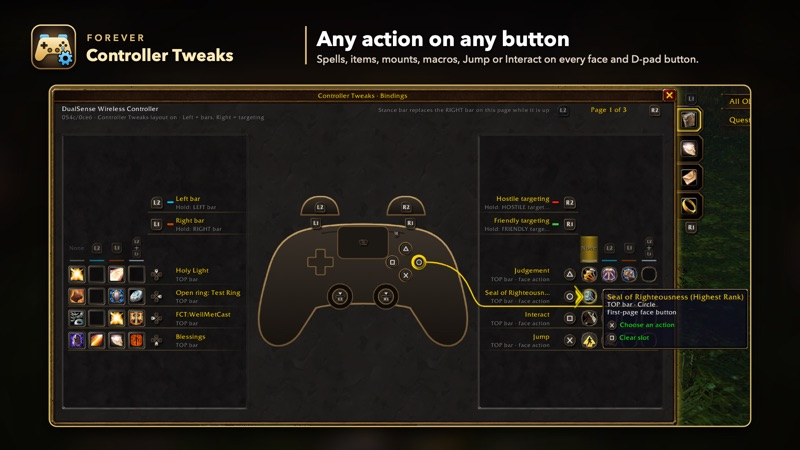
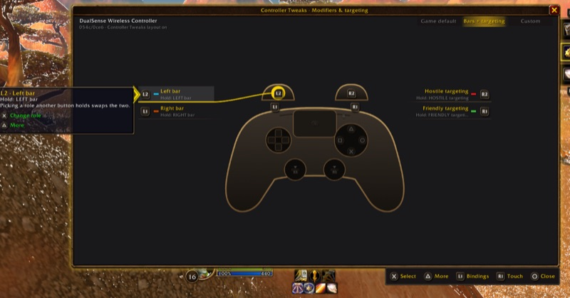
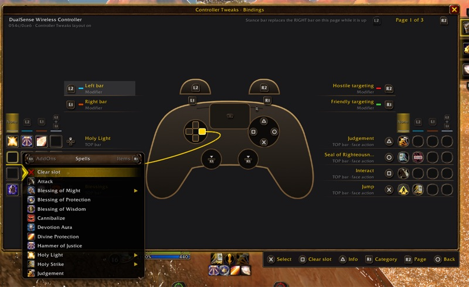
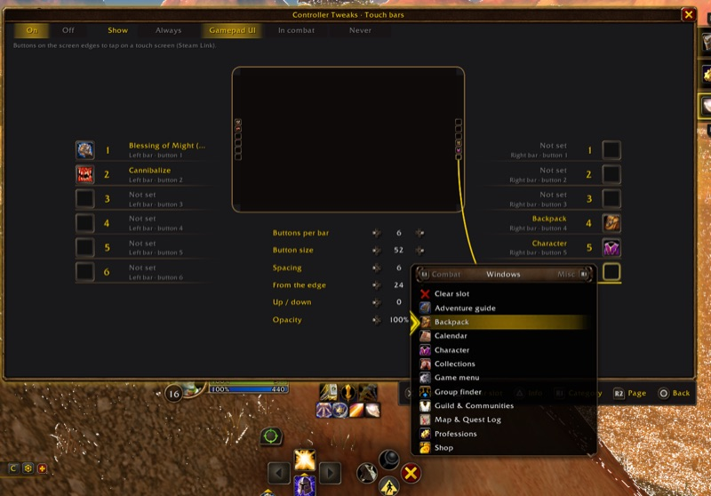
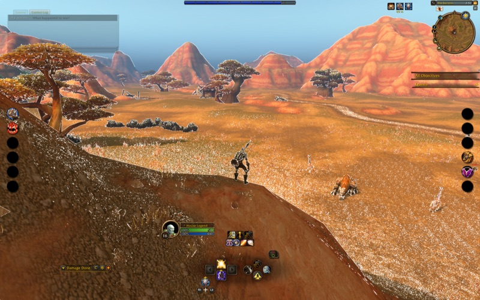
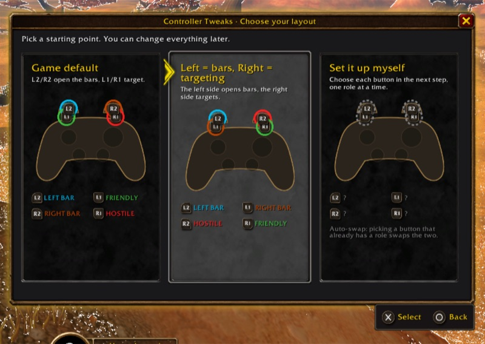
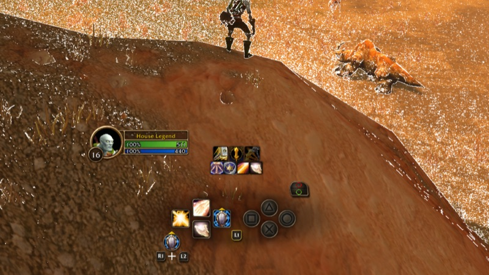
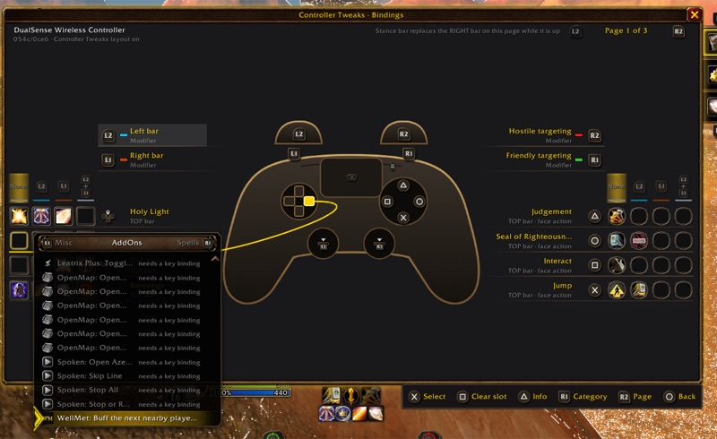

Remap the modifiers
Give the left bar, right bar, friendly targeting and hostile targeting to any of L1, R1, L2, R2 or the back paddles. Picking a role another button already has swaps the two. One preset sets "Left = bars, Right = targeting".
An addon for WoW Forever's Gamepad UI
Choose which bumper or trigger opens each crossbar bar and targeting mode, put any spell, item or action on any face or D-pad button, and tap spells on screen when you play through Steam Link. The glyphs always match the buttons you press, and you set everything up with the controller.
Public beta 1.0.0-beta.1. Free and open source (MIT). For WoW Forever 1.60.1. Found a bug? Report it on GitHub.
Forever Controller Tweaks builds on WoW Forever's own Gamepad UI instead of replacing it. Every native bar, glyph and targeting mode keeps working. Only the buttons change.
Give the left bar, right bar, friendly targeting and hostile targeting to any of L1, R1, L2, R2 or the back paddles. Picking a role another button already has swaps the two. One preset sets "Left = bars, Right = targeting".
Every face and D-pad button on every bar can hold a spell, item, toy, mount, equipment set, macro or game action. Jump, Interact, Back and Inspect can go anywhere too, and Interact keeps hold-to-loot.
Moved actions show cooldowns, range, mana, charges, proc glow and tooltips, and respond to mouse clicks, exactly like the game's own slots.
Spells with ranks are grouped. Pick a specific rank, or Highest Rank, which moves up by itself when you learn a new one.
Key bindings from other addons, for example WellMet, can go on any controller button.
Two bars on the left and right edges of the screen for tapping spells, made for Steam Link on a phone or tablet. Choose how many buttons, their size and position, and when they show. Off until you turn them on.
The bar hints, class prompts, targeting markers and on-screen legend show the buttons you actually press, in Xbox, PlayStation or Nintendo style.
If the game doesn't recognise your pad, pick PlayStation, Xbox or Switch layout from a card, or press each button once to teach it. On Steam Link, Xbox is suggested.
Three tabs (Bindings, Modifiers, Touch) in Forever's own look, driven entirely with the D-pad, with the controller drawn in the middle so you see which button you're editing.








| Controller | Glyphs | Status |
|---|---|---|
| DualSense | PlayStation shapes | Tested |
| Xbox Series / Xbox One | Xbox letters | Tested |
| GameSir X5 Lite over Steam Link | Xbox letters | Tested |
| DualShock 4 | PlayStation shapes | Not yet tested |
| Switch Pro | Nintendo | Not yet tested |
| Back paddles (DualSense Edge, Xbox Elite) | — | Not yet tested |
| Steam Deck | Follows the game | Not yet tested |
| Anything else | Your choice | Pick its type |
Tried another controller? Tell us how it went and include the lines /fct selftest prints.
_forever_/Interface/AddOns/, so you get AddOns/ForeverControllerTweaks/./fct.Yes. It uses the game's own controller config, the same mapping the game's options write, plus secure action buttons. Nothing is automated: one press is still one action. To go back to normal, choose Game default or disable the addon.
Yes. Your layout, moved actions, touch bars and glyphs work in and out of combat. Only the settings window closes when combat starts, and it offers to reopen afterwards.
No. ConsolePort replaces the game's interface. Forever Controller Tweaks keeps WoW Forever's own Gamepad UI and changes only which buttons do what.
In empty slots of keyboard action bars 6–8 (slots 145–180), which the Gamepad UI never shows. Only empty slots are used, and they're freed when you clear the button. Game actions such as Bags and Map are small macros named FCT:…. Macros you made yourself are never touched. Before uninstalling, type /fct release to clear both.
The prompts over NPCs, herbs, ore and chests come from the game's own locked binding, which addons can't change. To hide them, set Options → Accessibility → Interact Key Icons to None.
A game window opened in combat keeps your layout's bumpers until combat ends. Controller setup needs a mouse or keyboard for Skip and Save, because it records every button you press. The addon never changes the game's own gamepad options.